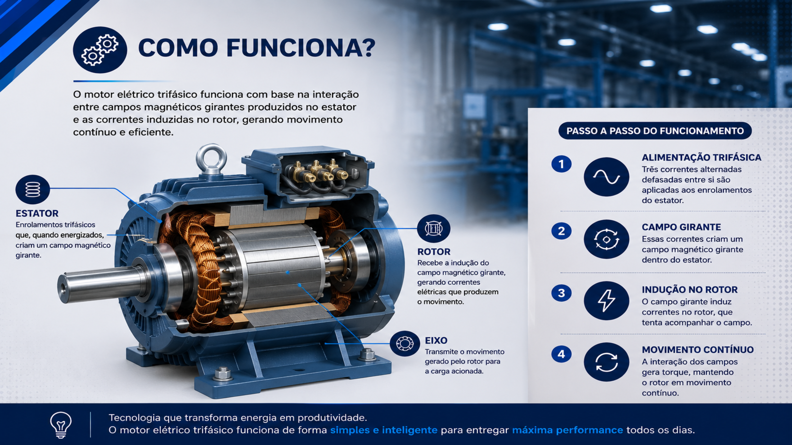
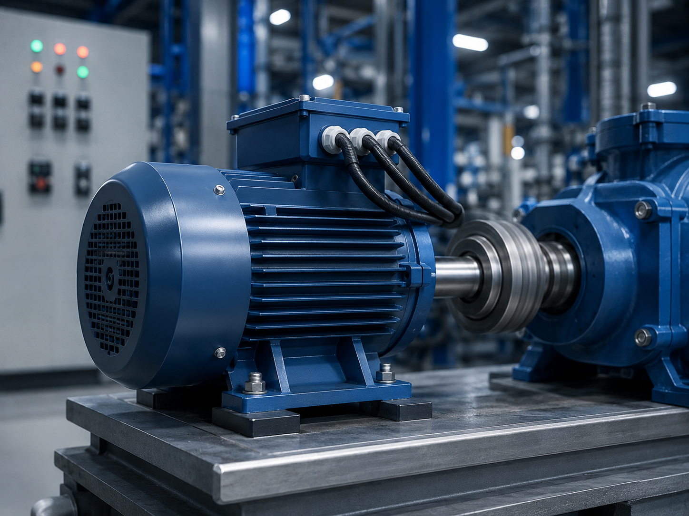
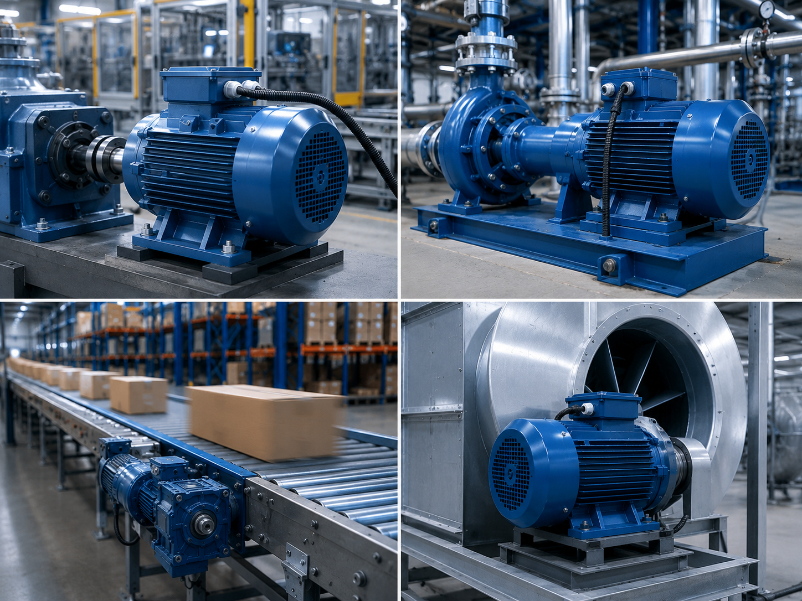
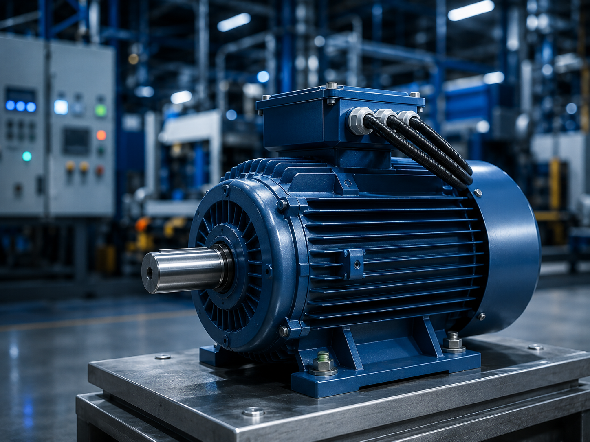
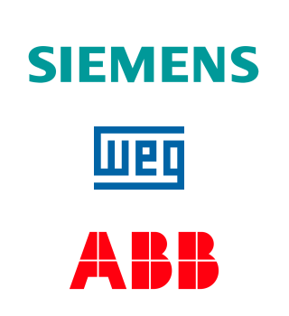

Motor Elétrico Trifásico
Máquina que transforma energia elétrica em energia mecânica por meio de corrente alternada (CA).



Conceito e Aplicação
O motor elétrico trifásico é um equipamento responsável por transformar energia elétrica trifásica em energia mecânica, sendo amplamente utilizado em aplicações industriais. É utilizado em máquinas industriais, bombas, ventiladores, compressores e sistemas automatizados, oferecendo alto desempenho, eficiência e funcionamento contínuo.
- Transforma energia elétrica em energia mecânica;
- Utilizado em máquinas e equipamentos industriais;
- Possui alto desempenho e eficiência operacional;
Informações Complementares



Empresas
As principais empresas que fabricam motores elétricos trifásicos são referências globais no setor de automação e equipamentos industriais. Em 2025, diversas marcas se destacam pela eficiência, desempenho e confiabilidade de seus motores utilizados em aplicações industriais.
A WEG, a Siemens e a ABB são algumas das principais fabricantes de motores elétricos trifásicos utilizados em máquinas, sistemas automatizados e processos industriais.
WEG: Empresa brasileira reconhecida mundialmente pela fabricação de motores elétricos e soluções industriais. Seus motores trifásicos se destacam pela eficiência energética, durabilidade e aplicação em diversos setores industriais.
SIEMENS: Multinacional especializada em tecnologia e automação industrial. Desenvolve motores trifásicos de alta performance utilizados em sistemas industriais, máquinas e processos automatizados.
ABB: Empresa global do setor de eletrificação e automação industrial. Fabrica motores elétricos trifásicos voltados para aplicações industriais, oferecendo alta eficiência, confiabilidade e tecnologia avançada.
